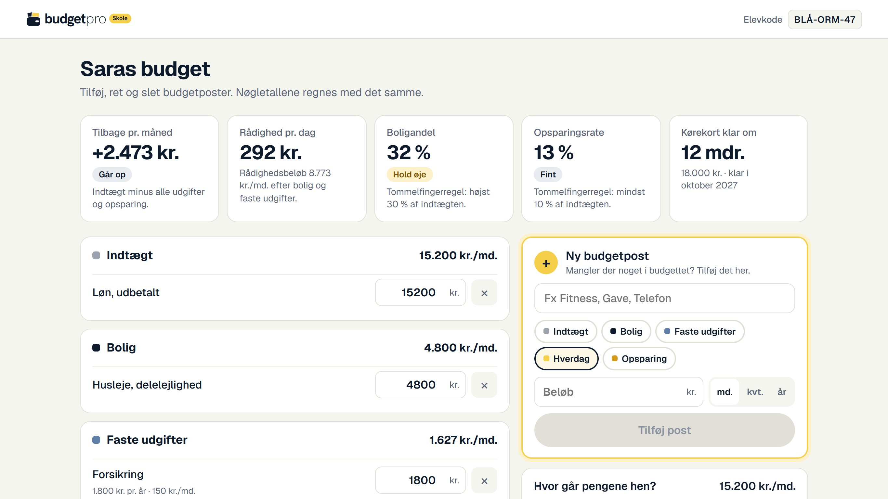

Vælg klassetrin og antal elever. Hver elev får en kode, så ingen skal oprette en bruger.
Eleven skriver sin kode på skole.budgetpro.dk/elev. budgetpro gemmer ingen navne.
Eleverne arbejder i eget tempo, og I samler op i klassen efter hver lektion.
Eleven vælger en case og ser, hvordan løn før skat bliver til det, der lander på kontoen.
Bolig, faste udgifter og hverdag. Budgetmåleren viser med det samme, hvad der er tilbage.
En buffer og et mål med en dato. Går budgettet ikke op, går eleven tilbage og prioriterer.
Sparer man op først, når man sine mål, og en buffer betyder, at en uventet regning ikke bliver et lån.
Hvor mange kr. mere om måneden skal Sara spare for at nå sin drøm 3 måneder hurtigere? Hvor i budgettet kan pengene komme fra?Huslejen stiger, jobbet forsvinder. Til sidst bygger eleven sit eget budget med nøgletal og gemmer det hele som PDF.

Se, hvor langt eleverne er, og læs deres svar på refleksionsspørgsmålene.
Koderne virker 52 dage endnu
Med delelejligheden bor Sara ikke alene, og der er stadig råd til at spare op til kørekort.
At miste jobbet. Så kan hun ikke betale huslejen.
Privatøkonomi på fire lektioner
Prøv gratis med én klasse.
skole.budgetpro.dk